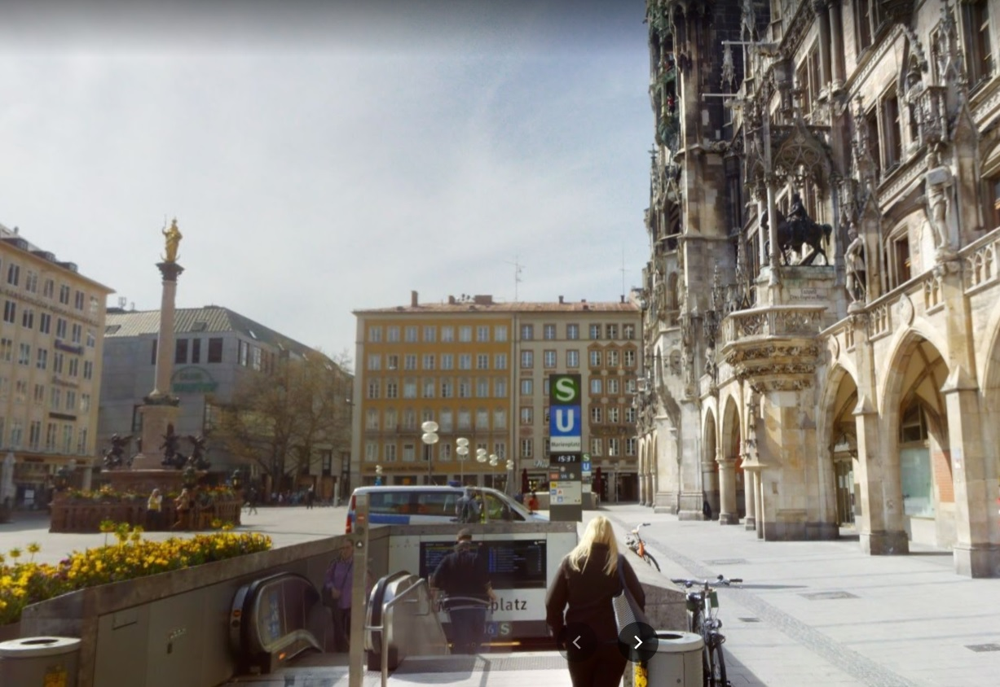

1, 2, 3, 4 für alle
MM
Insert description of the project
This website is about this
Select one of the U-Bahn stations
1 - ALTSTADT-LEHEL -
Marienplatz
Karlsplatz
Sendlinger Tor
Lehel
Odeonsplatz
2 - LUDWIGSVORSTADT-ISARVORSTADT -
München Hauptbahnhof
Theresienwiese
Goetheplatz
Fraunhoferstraße
Poccistraße
3 - MAXVORSTADT -
Maillingerstraße
Königsplatz
Theresienstraße
Josephsplatz
Universität
Stiglmaierplatz
4 - SCHWABING-WEST -
Hohenzollernplatz
Bonner Platz
Scheidplatz
Petuelring
Select one of the housing options
1 - ALTSTADT-LEHEL -
Marienplatz
Karlsplatz
Sendlinger Tor
Lehel
Odeonsplatz
2 - LUDWIGSVORSTADT-ISARVORSTADT -
München Hauptbahnhof
Theresienwiese
Goetheplatz
Fraunhoferstraße
Poccistraße
3 - MAXVORSTADT -
Maillingerstraße
Königsplatz
Theresienstraße
Josephsplatz
Universität
Stiglmaierplatz
4 - SCHWABING-WEST -
Hohenzollernplatz
Bonner Platz
Scheidplatz
Petuelring

Station: Marienplatz
text number 1
BARRIER
Construction work on the sidewalk